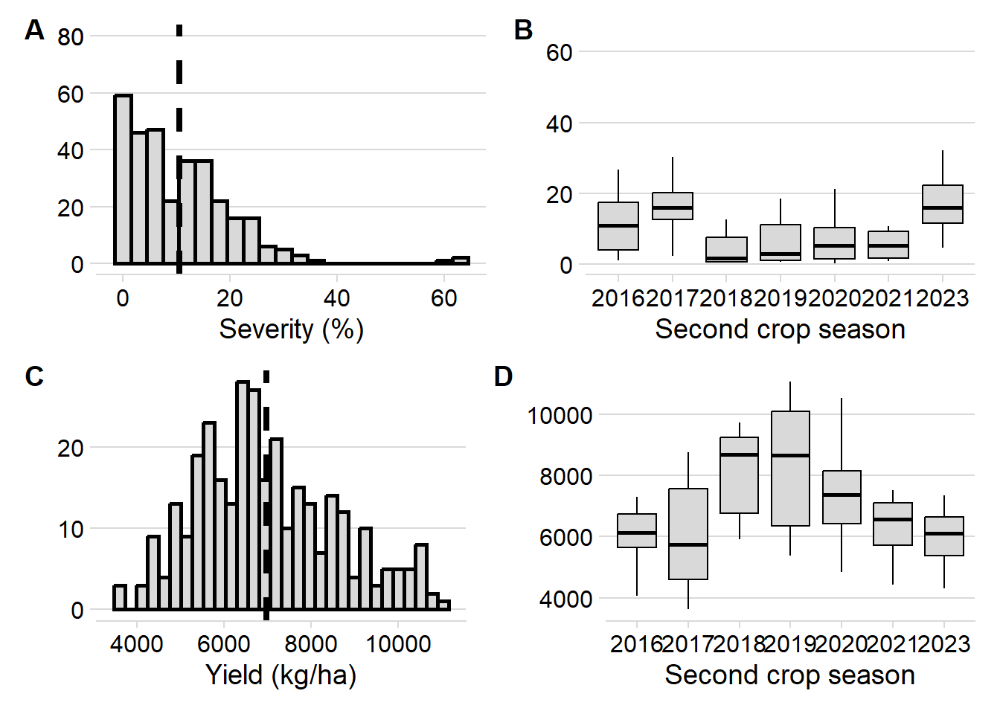

library(bulkreadr)
library(tidyverse)
library(readr)
library(metafor)
library(psych)
library(cowplot)
library(patchwork)
library(r4pde)
library(broom)
library(metafor)
library(lme4)
library(writexl)
library(gsheet)
library(readxl)
library(ggdist)
library(simr)Data Analysis
Library
Data importantion
mb <- read_excel("data/full_data.xlsx")
sev_dif <- mb |>
filter(!is.na(prod), !is.na(sev)) |>
group_by(ensaio_1) |>
summarize(sev_max = max(sev, na.rm = TRUE),
sev_min = min(sev, na.rm = TRUE),
sev_difference = sev_max - sev_min)
mb2 <- mb |>
filter(!is.na(prod), !is.na(sev)) |>
filter(ensaio_1 != 26) |>
filter(ensaio_1 != 29) |>
filter(ensaio_1 != 27) |>
filter(ensaio_1 != 24) |>
select(ensaio_1, ano, municipio, regiao, trat, bloco, sev, prod)
mb2$ensaio_1 <- as.integer(factor(mb2$ensaio_1, levels = unique(mb2$ensaio_1)))
mb2 <- mb2 |>
rename(cod = ensaio_1) |>
mutate(regiao = (as.factor(regiao)))Data visualization
mb_mean <- mb2 |>
group_by(cod, ano, trat) |>
summarise(mean_sev = mean(sev),
mean_yld = mean(prod),
median_sev = median(sev),
median_prod = median(prod))
mb_mean |>
group_by(ano) |>
summarise(median_sev = mean(mean_sev),
median_prod = mean(mean_yld))# A tibble: 7 × 3
ano median_sev median_prod
<dbl> <dbl> <dbl>
1 2016 11.5 6066.
2 2017 16.6 5953.
3 2018 4.26 8138.
4 2019 6.59 8275.
5 2020 7.00 7458.
6 2021 10.7 6368.
7 2023 17.5 6026.Data distribution
mb_mean |>
summary() cod ano trat mean_sev
Min. : 1.00 Min. :2016 Min. : 1.00 Min. : 0.2275
1st Qu.: 8.00 1st Qu.:2018 1st Qu.:17.00 1st Qu.: 2.7563
Median :14.00 Median :2020 Median :25.00 Median : 8.7000
Mean :14.28 Mean :2020 Mean :25.64 Mean :10.5945
3rd Qu.:21.00 3rd Qu.:2020 3rd Qu.:32.00 3rd Qu.:15.3333
Max. :27.00 Max. :2023 Max. :55.00 Max. :64.5000
mean_yld median_sev median_prod
Min. : 3614 Min. : 0.225 Min. : 3661
1st Qu.: 5754 1st Qu.: 2.643 1st Qu.: 5749
Median : 6706 Median : 8.575 Median : 6715
Mean : 6979 Mean :10.576 Mean : 6991
3rd Qu.: 8016 3rd Qu.:15.938 3rd Qu.: 8090
Max. :11056 Max. :63.500 Max. :11156 dist_sev <- mb_mean |>
ggplot(aes(mean_sev)) +
geom_histogram(binwidth = 3, fill = "grey85", color = "black", size = 1) +
theme_minimal_hgrid() +
labs(x = "Severity (%)", y = "") +
scale_y_continuous(limits = c(0, 80), breaks = c(seq(0, 80, by = 20), 80)) +
geom_vline(xintercept = 10.5945, size = 1.5, linetype = 2)
dist_yld <- mb_mean |>
ggplot(aes(mean_yld)) +
geom_histogram(fill = "grey85", color = "black", linewidth = 1)+
theme_minimal_hgrid() +
labs(x = "Yield (kg/ha)", y = "") +
geom_vline(xintercept = 6978.94, size = 1.5, linetype = 2)Boxplots year
box_sev <- mb_mean |>
ggplot(aes(factor(ano), mean_sev)) +
geom_boxplot(outlier.shape = NA, fill = "grey85", color = "black") +
theme_minimal_hgrid() +
labs(x = "Year", y = "")
box_yld <- mb_mean |>
ggplot(aes(factor(ano), mean_yld)) +
geom_boxplot(outlier.shape = NA, fill = "grey85", color = "black") +
theme_minimal_hgrid() +
labs(x = "Year", y = "") (dist_sev | box_sev)/
(dist_yld | box_yld) +
plot_annotation(tag_levels = "A") # Etiquetar gráficos A,B,C...
Individual regresions
mb_mean |>
ggplot(aes(mean_sev, mean_yld))+
geom_smooth(method = "lm", se = FALSE, color = "black", fullrange = TRUE) +
geom_point(color = "black", shape = 1) +
facet_wrap(~cod,
ncol = 6) +
scale_y_continuous(limits = c(0, 15000)) +
scale_x_continuous(limits = c(0, 100)) +
theme_cowplot() +
labs(y = "Yield (kg/ha)", x = "Severity (%)")
Meta-analytic models
Correlation
Preparation of the data
correlation_data <- mb2 %>%
group_by(cod) %>%
summarise(r_sev_yld = cor(sev, prod),
n = n(),
Z_sev_yld = 0.5*log((1+r_sev_yld)/(1-r_sev_yld)),
V = 1/(n-3),
vd_sev_yld = 1/(2*(1-r_sev_yld)/n-3)) |>
filter(r_sev_yld != "NA") |>
filter(n > 4)Correlations analysis
meta_cor_sev_yld <- rma(Z_sev_yld, V, data = correlation_data)
meta_cor_sev_yld
Random-Effects Model (k = 27; tau^2 estimator: REML)
tau^2 (estimated amount of total heterogeneity): 0.0719 (SE = 0.0269)
tau (square root of estimated tau^2 value): 0.2682
I^2 (total heterogeneity / total variability): 74.84%
H^2 (total variability / sampling variability): 3.97
Test for Heterogeneity:
Q(df = 26) = 107.2006, p-val < .0001
Model Results:
estimate se zval pval ci.lb ci.ub
-0.5053 0.0599 -8.4294 <.0001 -0.6228 -0.3878 ***
---
Signif. codes: 0 '***' 0.001 '**' 0.01 '*' 0.05 '.' 0.1 ' ' 1Z_sev_yld <- meta_cor_sev_yld$b
metafor::predict.rma(meta_cor_sev_yld)
pred se ci.lb ci.ub pi.lb pi.ub
-0.5053 0.0599 -0.6228 -0.3878 -1.0439 0.0332 R_sev_yld <- fisherz2r(Z_sev_yld)
R_sev_yld [,1]
intrcpt -0.4663024predict(meta_cor_sev_yld, transf = transf.ztor)
pred ci.lb ci.ub pi.lb pi.ub
-0.4663 -0.5531 -0.3695 -0.7794 0.0332 Graphics r correlation
r <- correlation_data %>%
ggplot(aes(r_sev_yld)) +
geom_histogram(bins = 10,
color = "black",
fill = "grey85",
alpha = 0.5,
size = 1) +
ylab("Frequency") +
xlab(expression("Pearson's correlation coefficient (" * italic(r) * ")")) +
theme_minimal_hgrid()+
theme(
axis.title.x = element_text(size = 20),
axis.title.y = element_text(size = 20),
axis.text.x = element_text(size = 16),
axis.text.y = element_text(size = 16))z <- correlation_data %>%
ggplot(aes(Z_sev_yld))+
geom_histogram(bins = 10,
color = "black",
fill = "grey85",
alpha = 0.5,
size = 1) +
ylab("Frequency") +
xlab(expression("Fisher's transformation of " * italic(r) * " (" * italic(Z) * ")")) +
theme_minimal_hgrid()+
theme(
axis.title.x = element_text(size = 20),
axis.title.y = element_text(size = 20),
axis.text.x = element_text(size = 16),
axis.text.y = element_text(size = 16))Random effects models
# individual regressions
fit_all <- mb2%>%
group_by(cod) |>
do(broom::tidy(lm(.$prod ~ .$sev), conf.int=TRUE))
summary(fit_all) cod term estimate std.error
Min. : 1.00 Length:54 Min. : -161.96 Min. : 3.885
1st Qu.: 7.25 Class :character 1st Qu.: -59.57 1st Qu.: 21.702
Median :14.00 Mode :character Median : 2777.38 Median : 77.872
Mean :14.00 Mean : 3781.25 Mean :118.198
3rd Qu.:20.75 3rd Qu.: 7285.83 3rd Qu.:177.116
Max. :27.00 Max. :11400.81 Max. :478.562
statistic p.value conf.low conf.high
Min. :-12.338 Min. :0.000000 Min. : -292.4 Min. : -90.90
1st Qu.: -2.987 1st Qu.:0.000000 1st Qu.: -117.1 1st Qu.: -16.14
Median : 7.814 Median :0.000000 Median : 2497.3 Median : 3000.05
Mean : 19.875 Mean :0.043693 Mean : 3542.3 Mean : 4020.24
3rd Qu.: 43.388 3rd Qu.:0.003669 3rd Qu.: 7068.6 3rd Qu.: 7502.93
Max. : 92.024 Max. :0.616992 Max. :10564.3 Max. :12237.31 # data preparation
Intercepts <- fit_all |>
filter(term == "(Intercept)")
Slopes <- fit_all |>
filter(term == ".$sev")# Model for the intercepts
mb_1 <- rma(yi = estimate, sei = std.error, data = Intercepts)
summary(mb_1)
Random-Effects Model (k = 27; tau^2 estimator: REML)
logLik deviance AIC BIC AICc
-228.1729 456.3458 460.3458 462.8620 460.8675
tau^2 (estimated amount of total heterogeneity): 2375862.5305 (SE = 673536.2422)
tau (square root of estimated tau^2 value): 1541.3833
I^2 (total heterogeneity / total variability): 98.94%
H^2 (total variability / sampling variability): 94.35
Test for Heterogeneity:
Q(df = 26) = 1698.0530, p-val < .0001
Model Results:
estimate se zval pval ci.lb ci.ub
7616.6131 299.9395 25.3938 <.0001 7028.7424 8204.4838 ***
---
Signif. codes: 0 '***' 0.001 '**' 0.01 '*' 0.05 '.' 0.1 ' ' 1# Model for the slopes
mb_2 <- rma(yi = estimate, sei = std.error, data = Slopes)
summary(mb_2)
Random-Effects Model (k = 27; tau^2 estimator: REML)
logLik deviance AIC BIC AICc
-132.3305 264.6611 268.6611 271.1773 269.1828
tau^2 (estimated amount of total heterogeneity): 935.5152 (SE = 376.6426)
tau (square root of estimated tau^2 value): 30.5862
I^2 (total heterogeneity / total variability): 87.31%
H^2 (total variability / sampling variability): 7.88
Test for Heterogeneity:
Q(df = 26) = 180.2654, p-val < .0001
Model Results:
estimate se zval pval ci.lb ci.ub
-60.2210 7.3793 -8.1608 <.0001 -74.6841 -45.7579 ***
---
Signif. codes: 0 '***' 0.001 '**' 0.01 '*' 0.05 '.' 0.1 ' ' 1b0 <- fit_all |>
filter(term == "(Intercept)") |>
ggplot(aes(x = estimate))+
geom_histogram(bins = 15, color = "black", fill = "grey85", alpha = 0.5, size = 1)+
geom_vline(xintercept = 7616.6131, size = 1.5, linetype = 2, color = "black")+
theme_minimal_hgrid()+
labs(x = "Intercept", y = "Frequency") +
theme(
axis.title.x = element_text(size = 20),
axis.title.y = element_text(size = 20),
axis.text.x = element_text(size = 16),
axis.text.y = element_text(size = 16))
b1 <- fit_all |>
filter(term == ".$sev") |>
ggplot(aes(x = estimate))+
geom_histogram(bins = 15, color = "black", fill = "grey85", alpha = 0.5, size = 1)+
geom_vline(xintercept = -60.2210 , size = 1.5, linetype = 2, color = "black")+
theme_minimal_hgrid()+
labs(x = "Slope", y = "Frequency")+
theme(
axis.title.x = element_text(size = 20),
axis.title.y = element_text(size = 20),
axis.text.x = element_text(size = 16),
axis.text.y = element_text(size = 16))(r|z)/
(b0|b1) +
plot_annotation(tag_levels = "A") # Etiquetar gráficos A,B,C...
r_regression_meta <- data.frame(
estimate = c(7616.6, -60.2),
low = c(7028.7 , -74.7),
high = c(8204.4, -45.8))
meta <- ggplot() +
geom_point(aes(x = 0:100, y = seq(0,12000,by = 120)), color = NA)+
scale_y_continuous(breaks = seq(0, 12000, by = 2000),
limits = c(0, 12000))+
geom_abline(aes(slope = Slopes$estimate, intercept = Intercepts$estimate), size = 1, alpha = 0.5, color = "gray")+
geom_abline(data =r_regression_meta, aes(slope = estimate[2], intercept = estimate[1]), size = 1.5, color = "#5d02a5")+
geom_abline(data = r_regression_meta, aes(intercept = high[1], slope = high[2]), size = .51, linetype = 2)+ #upper ci
geom_abline(data = r_regression_meta, aes(intercept = low[1], slope = low[2]), size = .51, linetype = 2)+ #low ci
labs(x = "Severity (%)", y = "Yield (kg/ha) ",
title = paste("Meta-analytic model"))+
theme_classic()+
theme(text = element_text(size = 20),
axis.text.x = element_text(size = 18),
axis.text.y = element_text(size = 18),
plot.title = element_text(hjust = 0.5, size = 18))
metaCoefficient damage
-60.2210/7616.6131*100[1] -0.7906533Moderators
mb2 |>
summary() cod ano municipio regiao
Min. : 1.00 Min. :2016 Length:1200 Centro-Oeste:144
1st Qu.: 7.00 1st Qu.:2018 Class :character Sudeste :228
Median :13.00 Median :2020 Mode :character Sul :828
Mean :13.67 Mean :2020
3rd Qu.:20.00 3rd Qu.:2020
Max. :27.00 Max. :2023
trat bloco sev prod
Min. : 1.00 Min. :1.00 Min. : 0.10 Min. : 3232
1st Qu.:17.00 1st Qu.:1.00 1st Qu.: 2.10 1st Qu.: 5788
Median :25.00 Median :2.00 Median : 8.00 Median : 6851
Mean :25.02 Mean :2.41 Mean :10.34 Mean : 7038
3rd Qu.:32.00 3rd Qu.:3.00 3rd Qu.:15.40 3rd Qu.: 8152
Max. :55.00 Max. :4.00 Max. :75.00 Max. :12904 # median prod = 6851
mb2 |>
filter(trat == 1) |>
summary() cod ano municipio regiao
Min. : 1.00 Min. :2016 Length:102 Centro-Oeste:12
1st Qu.: 7.00 1st Qu.:2018 Class :character Sudeste :20
Median :13.00 Median :2020 Mode :character Sul :70
Mean :13.38 Mean :2020
3rd Qu.:19.75 3rd Qu.:2021
Max. :27.00 Max. :2023
trat bloco sev prod
Min. :1 Min. :1.000 Min. : 1.10 Min. :3414
1st Qu.:1 1st Qu.:1.000 1st Qu.:11.40 1st Qu.:4933
Median :1 Median :2.000 Median :20.50 Median :5770
Mean :1 Mean :2.412 Mean :24.37 Mean :6218
3rd Qu.:1 3rd Qu.:3.000 3rd Qu.:32.00 3rd Qu.:7518
Max. :1 Max. :4.000 Max. :75.00 Max. :9936 # median sev = 20.5
moderator <- mb2 |>
select(cod, regiao, trat, bloco, sev, prod) |>
group_by(cod) |>
summarise(regiao = first(regiao),
mean_sev = mean(sev),
mean_yld = mean(prod),
sev_class = ifelse(mean_sev > 20.5, ">20.5", "<20.5"),
prod_class = ifelse(mean_yld > 6851, ">6851", "<6851 "))
moderator$prod_class <- as.factor(moderator$prod_class)
moderator$sev_class <- as.factor(moderator$sev_class)#preparing data: INTERCEPTS
int_class <- left_join(Intercepts, moderator, by = "cod")
#preparing data: SLOPES
slope_class <- left_join(Slopes, moderator, by = "cod")Yield Class
# Intercept
mb_mod1 <- rma(yi = estimate ~ factor(prod_class), sei = std.error, data = int_class)
summary(mb_mod1)
Mixed-Effects Model (k = 27; tau^2 estimator: REML)
logLik deviance AIC BIC AICc
-211.5079 423.0158 429.0158 432.6724 430.1586
tau^2 (estimated amount of residual heterogeneity): 1209152.6398 (SE = 356481.8177)
tau (square root of estimated tau^2 value): 1099.6148
I^2 (residual heterogeneity / unaccounted variability): 97.87%
H^2 (unaccounted variability / sampling variability): 46.91
R^2 (amount of heterogeneity accounted for): 49.11%
Test for Residual Heterogeneity:
QE(df = 25) = 863.9073, p-val < .0001
Test of Moderators (coefficient 2):
QM(df = 1) = 24.2495, p-val < .0001
Model Results:
estimate se zval pval ci.lb
intrcpt 6722.5200 280.7918 23.9413 <.0001 6172.1782
factor(prod_class)>6851 2165.9347 439.8396 4.9244 <.0001 1303.8650
ci.ub
intrcpt 7272.8617 ***
factor(prod_class)>6851 3028.0044 ***
---
Signif. codes: 0 '***' 0.001 '**' 0.01 '*' 0.05 '.' 0.1 ' ' 1# Slope
mb_mod2 <- rma(yi = estimate ~ factor(prod_class), sei = std.error, data = slope_class)
summary(mb_mod2)
Mixed-Effects Model (k = 27; tau^2 estimator: REML)
logLik deviance AIC BIC AICc
-127.7010 255.4020 261.4020 265.0587 262.5449
tau^2 (estimated amount of residual heterogeneity): 988.2063 (SE = 403.4585)
tau (square root of estimated tau^2 value): 31.4357
I^2 (residual heterogeneity / unaccounted variability): 86.78%
H^2 (unaccounted variability / sampling variability): 7.56
R^2 (amount of heterogeneity accounted for): 0.00%
Test for Residual Heterogeneity:
QE(df = 25) = 180.0198, p-val < .0001
Test of Moderators (coefficient 2):
QM(df = 1) = 0.0100, p-val = 0.9202
Model Results:
estimate se zval pval ci.lb ci.ub
intrcpt -59.8836 9.1664 -6.5329 <.0001 -77.8494 -41.9178
factor(prod_class)>6851 -1.6127 16.0942 -0.1002 0.9202 -33.1567 29.9312
intrcpt ***
factor(prod_class)>6851
---
Signif. codes: 0 '***' 0.001 '**' 0.01 '*' 0.05 '.' 0.1 ' ' 1Sev Class
# Intercept
mb_mod3 <- rma(yi = estimate ~ factor(sev_class), sei = std.error, data = int_class)
summary(mb_mod3)
Mixed-Effects Model (k = 27; tau^2 estimator: REML)
logLik deviance AIC BIC AICc
-219.7498 439.4997 445.4997 449.1563 446.6425
tau^2 (estimated amount of residual heterogeneity): 2441093.8335 (SE = 705085.9590)
tau (square root of estimated tau^2 value): 1562.4000
I^2 (residual heterogeneity / unaccounted variability): 98.92%
H^2 (unaccounted variability / sampling variability): 92.59
R^2 (amount of heterogeneity accounted for): 0.00%
Test for Residual Heterogeneity:
QE(df = 25) = 1426.4966, p-val < .0001
Test of Moderators (coefficient 2):
QM(df = 1) = 0.2769, p-val = 0.5988
Model Results:
estimate se zval pval ci.lb
intrcpt 7683.1372 328.9455 23.3569 <.0001 7038.4159
factor(sev_class)>20.5 -452.5984 860.1746 -0.5262 0.5988 -2138.5096
ci.ub
intrcpt 8327.8584 ***
factor(sev_class)>20.5 1233.3128
---
Signif. codes: 0 '***' 0.001 '**' 0.01 '*' 0.05 '.' 0.1 ' ' 1# Slope
mb_mod4 <- rma(yi = estimate ~ factor(sev_class), sei = std.error, data = slope_class)
summary(mb_mod4)
Mixed-Effects Model (k = 27; tau^2 estimator: REML)
logLik deviance AIC BIC AICc
-127.8755 255.7511 261.7511 265.4077 262.8939
tau^2 (estimated amount of residual heterogeneity): 996.5972 (SE = 409.2919)
tau (square root of estimated tau^2 value): 31.5689
I^2 (residual heterogeneity / unaccounted variability): 86.14%
H^2 (unaccounted variability / sampling variability): 7.22
R^2 (amount of heterogeneity accounted for): 0.00%
Test for Residual Heterogeneity:
QE(df = 25) = 167.5842, p-val < .0001
Test of Moderators (coefficient 2):
QM(df = 1) = 0.0001, p-val = 0.9905
Model Results:
estimate se zval pval ci.lb ci.ub
intrcpt -60.4804 8.4576 -7.1510 <.0001 -77.0570 -43.9037
factor(sev_class)>20.5 0.2244 18.8520 0.0119 0.9905 -36.7249 37.1737
intrcpt ***
factor(sev_class)>20.5
---
Signif. codes: 0 '***' 0.001 '**' 0.01 '*' 0.05 '.' 0.1 ' ' 1Region
# Intercept
mb_mod5 <- rma(yi = estimate ~ factor(regiao), sei = std.error, data = int_class)
summary(mb_mod5)
Mixed-Effects Model (k = 27; tau^2 estimator: REML)
logLik deviance AIC BIC AICc
-209.2031 418.4063 426.4063 431.1185 428.5116
tau^2 (estimated amount of residual heterogeneity): 2087546.0942 (SE = 618030.9538)
tau (square root of estimated tau^2 value): 1444.8343
I^2 (residual heterogeneity / unaccounted variability): 98.79%
H^2 (unaccounted variability / sampling variability): 82.91
R^2 (amount of heterogeneity accounted for): 12.14%
Test for Residual Heterogeneity:
QE(df = 24) = 1299.4566, p-val < .0001
Test of Moderators (coefficients 2:3):
QM(df = 2) = 5.3335, p-val = 0.0695
Model Results:
estimate se zval pval ci.lb
intrcpt 9437.8141 841.3352 11.2177 <.0001 7788.8274
factor(regiao)Sudeste -2178.3506 1064.6324 -2.0461 0.0407 -4264.9917
factor(regiao)Sul -2019.5118 905.9929 -2.2291 0.0258 -3795.2252
ci.ub
intrcpt 11086.8009 ***
factor(regiao)Sudeste -91.7095 *
factor(regiao)Sul -243.7985 *
---
Signif. codes: 0 '***' 0.001 '**' 0.01 '*' 0.05 '.' 0.1 ' ' 1# Slope
mb_mod6 <- rma(yi = estimate ~ factor(regiao), sei = std.error, data = slope_class)
summary(mb_mod6)
Mixed-Effects Model (k = 27; tau^2 estimator: REML)
logLik deviance AIC BIC AICc
-122.7901 245.5801 253.5801 258.2923 255.6854
tau^2 (estimated amount of residual heterogeneity): 950.1395 (SE = 402.7406)
tau (square root of estimated tau^2 value): 30.8243
I^2 (residual heterogeneity / unaccounted variability): 86.44%
H^2 (unaccounted variability / sampling variability): 7.38
R^2 (amount of heterogeneity accounted for): 0.00%
Test for Residual Heterogeneity:
QE(df = 24) = 140.0586, p-val < .0001
Test of Moderators (coefficients 2:3):
QM(df = 2) = 1.0159, p-val = 0.6017
Model Results:
estimate se zval pval ci.lb ci.ub
intrcpt -75.9369 21.8917 -3.4688 0.0005 -118.8438 -33.0300
factor(regiao)Sudeste 9.2605 26.5368 0.3490 0.7271 -42.7506 61.2716
factor(regiao)Sul 20.9261 23.7765 0.8801 0.3788 -25.6750 67.5271
intrcpt ***
factor(regiao)Sudeste
factor(regiao)Sul
---
Signif. codes: 0 '***' 0.001 '**' 0.01 '*' 0.05 '.' 0.1 ' ' 1Mixed model
rc1 <- lmer(prod ~ sev + (sev |cod), data = mb2,
REML = F)
summary(rc1)Linear mixed model fit by maximum likelihood ['lmerMod']
Formula: prod ~ sev + (sev | cod)
Data: mb2
AIC BIC logLik deviance df.resid
19167.1 19197.6 -9577.5 19155.1 1194
Scaled residuals:
Min 1Q Median 3Q Max
-4.9484 -0.5766 0.0251 0.5983 3.8936
Random effects:
Groups Name Variance Std.Dev. Corr
cod (Intercept) 2418534 1555.2
sev 671 25.9 -0.51
Residual 434524 659.2
Number of obs: 1200, groups: cod, 27
Fixed effects:
Estimate Std. Error t value
(Intercept) 7555.606 302.723 24.959
sev -57.530 6.554 -8.778
Correlation of Fixed Effects:
(Intr)
sev -0.461# Extraindo a variância dos efeitos aleatórios
random_effects_variance <- VarCorr(rc1)
# Acessando a matriz de variância/covariância do grupo 'cod'
var_random_effects <- random_effects_variance$cod
# Variância residual (erro)
sigma2 <- sigma(rc1)^2
# τ² (variância dos efeitos aleatórios)
# A variância do intercepto está na primeira linha e coluna
var_intercept <- var_random_effects[1, 1]
# A variância do slope está na segunda linha e coluna
var_slope <- var_random_effects[2, 2]
# Calcular I²
tau2 <- var_intercept + var_slope # Variância total dos efeitos aleatórios
I2 <- (tau2 / (tau2 + sigma2)) * 100 # Cálculo de I²
I2[1] 84.77347CI 95%
confint(rc1, method = "profile") # Intervalo baseado no perfil de verossimilhança (mais robusto) 2.5 % 97.5 %
.sig01 1207.6610151 2095.6404159
.sig02 -0.8065943 -0.0557296
.sig03 16.8258798 39.2989690
.sigma 633.1330322 687.0698941
(Intercept) 6939.9795545 8172.4353271
sev -72.0413852 -44.6641961slp2 <- ranef(rc1)
slp2 <- as.data.frame(slp2)
slp2_wide <- slp2 %>%
pivot_wider(names_from = term, values_from = c(condsd, condval)) %>%
rename(
Intercept_CondSD = "condsd_(Intercept)",
Intercept_CondVal = "condval_(Intercept)",
Sev_CondSD = condsd_sev,
Sev_CondVal = condval_sev) |>
mutate(intercepts = 7555.606+ Intercept_CondVal,
slopes = -57.530+Sev_CondVal)r_regression_misto <- data.frame(
estimate = c(7555.6, -57.5),
low = c(6939.9795545 , -72.0413852),
high = c(8172.4353271, -44.6641961)
)
mixed <- ggplot() +
geom_point(aes(x = 0:100, y = seq(0,12000,by = 120)), color = NA)+
scale_y_continuous(breaks = seq(0, 12000, by = 2000),
limits = c(0, 12000))+
geom_abline(data = slp2_wide, aes(slope = slopes, intercept = intercepts), size = 1, alpha = 0.5, color = "gray")+
geom_abline(data =r_regression_misto, aes(slope = estimate[2], intercept = estimate[1]), size = 1.5, color = "#fdb430")+
geom_abline(data = r_regression_misto, aes(intercept = high[1], slope = high[2]), size = .51, linetype = 2)+ #upper ci
geom_abline(data = r_regression_misto, aes(intercept = low[1], slope = low[2]), size = .51, linetype = 2)+ #low ci
labs(x = "Severity (%)", y = "Yield (kg/ha) ",
title = paste("Mixed-effects model"))+
theme_classic()+
theme(text = element_text(size = 20),
axis.text.x = element_text(size = 18),
axis.text.y = element_text(size = 18),
plot.title = element_text(hjust = 0.5, size = 18))(meta|mixed) +
plot_annotation(tag_levels = "A") # Tag graph A,B,C...Coefficient damage
#mixed-models
-58.690/7689.656*100[1] -0.7632331EDT
cost = seq(15, 45,length.out = 200)
lambda = c(0.55, 0.65, 0.75)
soybean = seq(100, 300,length.out = 200)
a = c(0.008)
rend = seq(3.5, 10.5, by = 0.5)economic = expand.grid(cost = cost,soybean = soybean, lambda = lambda, a = a, rend=rend) %>%
mutate(a2 = a * rend,
econ_tresh2 = ((cost/(soybean*a2))*lambda)) %>%
mutate(lambda = paste0(lambda,"% of Control")) surface = economic %>%
mutate(efficacy = case_when(lambda == "0.55% of Control" ~ "55% of Control",
lambda == "0.65% of Control" ~ "65% of Control",
lambda == "0.75% of Control" ~ "75% of Control")) |>
group_by(soybean, cost,efficacy) %>%
summarise(
econ_tresh2 = mean(econ_tresh2))
surface |>
summary() soybean cost efficacy econ_tresh2
Min. :100 Min. :15.0 Length:120000 Min. :0.5479
1st Qu.:150 1st Qu.:22.5 Class :character 1st Qu.:1.4034
Median :200 Median :30.0 Mode :character Median :1.9280
Mean :200 Mean :30.0 Mean :2.1363
3rd Qu.:250 3rd Qu.:37.5 3rd Qu.:2.6457
Max. :300 Max. :45.0 Max. :6.7239 median_value <- median(surface$econ_tresh2)
print(median_value)[1] 1.928021edt3 <- ggplot(surface, aes(x = econ_tresh2)) +
stat_halfeye(aes(fill = after_stat(x)), line = "black", alpha = 0.95) +
scale_fill_viridis_c(option = "plasma") + # Substitua "inferno" pela opção que combina com a b
labs(x = "Economic Damage Threshold (EDT)", y = "Density", fill = "EDT") +
theme_minimal(base_size = 16)+
theme(axis.text.x = element_text(size = 13),
axis.text.y = element_text(size = 13),
legend.position = "NA")
edt4 <- surface %>%
ggplot(aes(cost, soybean, fill = econ_tresh2))+
geom_raster(alpha = 0.9)+
scale_fill_viridis_b(option = "C",
guide = guide_colorbar(barwidth = 0.3, barheight = 15),
breaks = seq(0, 14, by =1))+
facet_grid(~efficacy)+
theme_minimal_grid()+
labs(y = "Maize price (USD/t)",
x = "Cost (USD/ha)",
fill ="EDT (%)" )+
theme(legend.position = "right",
legend.justification = 0.5)
edt3/edt4+
plot_annotation(tag_levels = "A")+
plot_layout(guides = "collect")